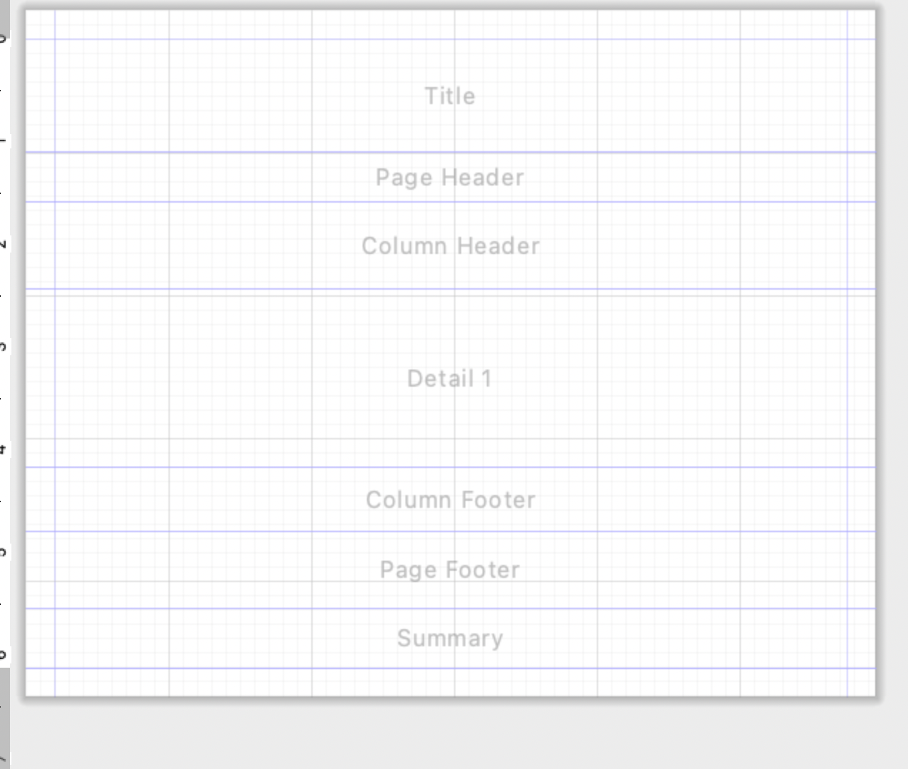

4. Diseñador de informes
Los informes se dividen en bandas:

Detail se repite por cada registro. Title aparece al inicio y Summary es útil para totales y gráficos.
Los informes de JasperReports se organizan mediante bandas (Bands). Cada banda representa una zona del informe y tiene un comportamiento diferente.
La principal diferencia entre ellas es cuándo y cuántas veces aparecen al generar el informe.
| Banda | ¿Cuándo aparece? | ¿Para qué se utiliza? |
|---|---|---|
| Title | Una vez, al principio | Título, logotipo y datos generales del informe |
| Page Header | Al comienzo de cada página | Cabecera general de la página |
| Column Header | Antes de los registros | Nombres de las columnas |
| Detail | Una vez por cada registro | Datos obtenidos de la base de datos |
| Column Footer | Al finalizar las columnas | Totales o información asociada a las columnas |
| Page Footer | Al final de cada página | Número de página, fecha, etc. |
| Summary | Una vez, al final | Totales generales, estadísticas y gráficos |
Title
La banda Title aparece normalmente una sola vez al comienzo del informe.
Se utiliza para mostrar información general como:
- Título del informe.
- Nombre de la empresa.
- Logotipo.
- Fecha de generación.
- Descripción del informe.
Por ejemplo:
========================================
INFORME DE PRODUCTOS
Informática Puertollano
========================================
Warning
No debemos utilizar Title para los nombres de las columnas, ya que esta banda solamente aparece al comienzo del informe.
Page Header
La banda Page Header aparece en la parte superior de cada página.
Se utiliza para información que queremos repetir cuando comienza una nueva página.
Por ejemplo:
Informática Puertollano S.L. INFORME DE PRODUCTOS
---------------------------------------------------------
Si nuestro informe tiene 5 páginas, el Page Header aparecerá 5 veces.
Column Header
La banda Column Header contiene normalmente los nombres de las columnas correspondientes a los datos que mostraremos posteriormente.
Por ejemplo:
Producto Categoría Precio Stock
----------------------------------------------------------
Debajo de estos encabezados aparecerán los registros de la banda Detail.
Detail
La banda Detail es una de las más importantes de JasperReports.
Se repite automáticamente una vez por cada registro obtenido de la base de datos.
Supongamos que ejecutamos:
SELECT nombre, precio, stock
FROM productos;
Y PostgreSQL devuelve 4 productos.
JasperReports procesará la banda Detail cuatro veces:
Detail → Monitor
Detail → Teclado
Detail → Ratón
Detail → SSD
En esta banda colocaremos normalmente los Fields procedentes de la consulta:
$F{nombre}
$F{precio}
$F{stock}
El diseño podría ser:
COLUMN HEADER
Producto Precio Stock
----------------------------------------
DETAIL
$F{nombre} $F{precio} $F{stock}
Y al generar el informe obtendríamos:
Producto Precio Stock
----------------------------------------
Monitor 249,99 € 12
Teclado 89,99 € 5
Ratón 39,99 € 20
SSD 79,99 € 8
Important
Nosotros diseñamos una única banda Detail. JasperReports se encarga de repetirla automáticamente para cada registro.
Column Footer
La banda Column Footer aparece al finalizar las columnas de una página.
Puede utilizarse para:
- Totales de columna.
- Información adicional.
- Elementos relacionados con el contenido de las columnas.
En informes sencillos es habitual que esta banda permanezca vacía.
Page Footer
La banda Page Footer aparece en la parte inferior de cada página.
Se utiliza habitualmente para:
- Número de página.
- Fecha de impresión.
- Nombre del informe.
- Información corporativa.
Por ejemplo:
----------------------------------------------------------
SGE - Curso 2026/2027 Página 2 de 4
Summary
La banda Summary aparece normalmente una sola vez al final del informe.
Se utiliza para mostrar información resumen:
- Número total de registros.
- Sumas.
- Promedios.
- Estadísticas.
- Totales generales.
- Gráficos.
Por ejemplo:
RESUMEN
--------------------------------
Número de productos: 125
Precio medio: 105,32 €
Valor total del stock: 34.521,25 €
También es una zona apropiada para colocar un gráfico resumen.
¿Cómo se genera un informe?
Supongamos que tenemos 100 productos y el informe ocupa 3 páginas.
JasperReports procesaría las bandas aproximadamente de esta manera:
TITLE ← una vez
PAGE HEADER ← página 1
COLUMN HEADER
DETAIL → producto 1
DETAIL → producto 2
DETAIL → producto 3
...
DETAIL → producto 40
COLUMN FOOTER
PAGE FOOTER
PAGE HEADER ← página 2
COLUMN HEADER
DETAIL → producto 41
...
DETAIL → producto 80
COLUMN FOOTER
PAGE FOOTER
PAGE HEADER ← página 3
COLUMN HEADER
DETAIL → producto 81
...
DETAIL → producto 100
COLUMN FOOTER
PAGE FOOTER
SUMMARY ← una vez
Idea fundamental
Title presenta el informe.
Page Header y Page Footer se repiten en cada página.
Column Header identifica las columnas.
Detail se repite por cada registro obtenido de la base de datos.
Summary muestra el resumen final.
Ejercicio
Crea un informe llamado:
prueba.jrxml
Configura las bandas para obtener:
- En Title:
MI PRIMER INFORME. - En Page Header:
Sistema de Gestión Empresarial. - En Column Header:
Producto,PrecioyStock. - En Page Footer:
SGE - Curso 2026/2027. - En Summary:
Fin del informe.
Comprueba
Ejecuta la vista Preview y observa qué elementos aparecen una sola vez y cuáles se repiten en cada página.